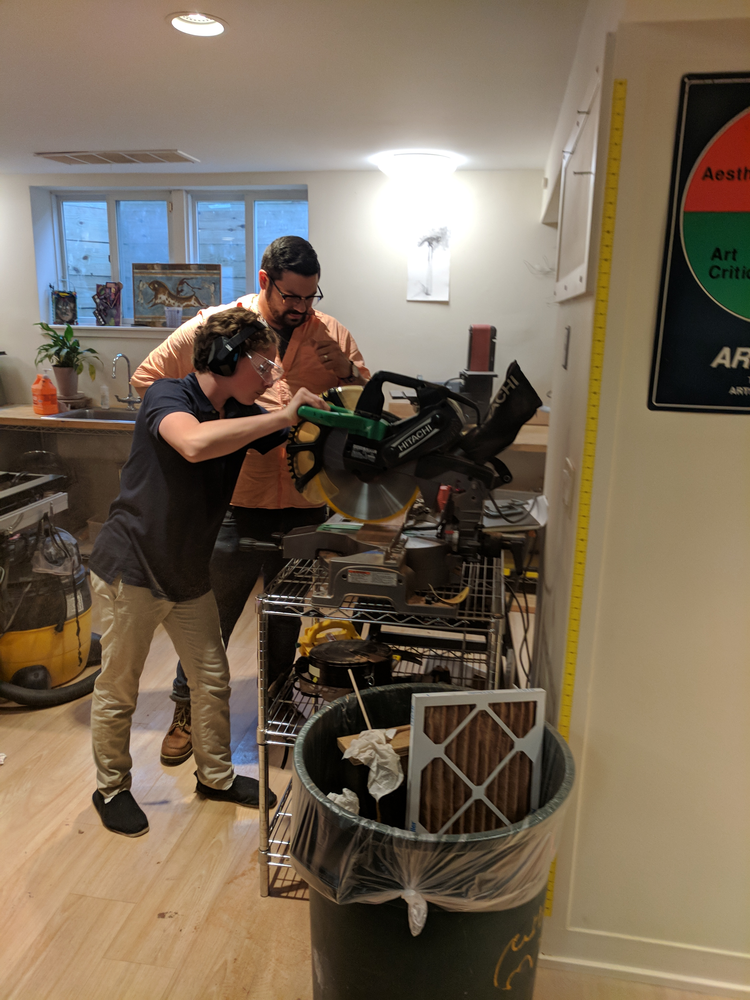

On my trip to NBC and youtube I noticed some differences and similarities. At YouTube spaces they had small rooms to help teach video making for YouTubers with 10,000 subscribers and more. The rooms were also used for live streaming. At NBC the rooms were much bigger and used for major shows such as SNL, NBC news, late night with Jimmy fallon ect. At NBC they had over 1000 lights were YouTube only had a several. Walking threw both buildings I noticed a similarity in equipment. I enjoyed my time at both YouTube and NBC because I enjoy tech and media.
In Innovation Lab one of my project assignments was to design a lamp. I decided to use mahogany wood for this project. I created my design to have a modern look, so I created a cube that is small and the light peers through the measured and cut holes. In this project I learned in the process of cutting the holes you have to be careful to not cut at an angle. In conclusion, during this project I learned how to become a better craftsman and designer.
